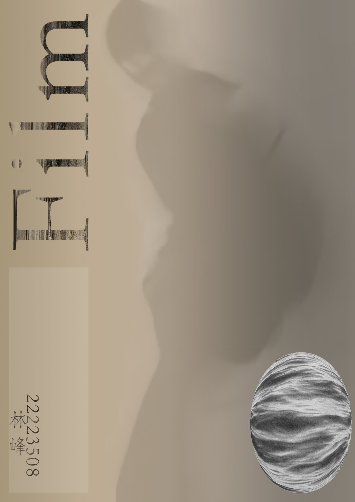

作品集 / PORTFOLIO
2026 · 求职
林峰
LIN FENG
新媒体运营 · 摄影 · 版式设计
内容策划、短视频账号运营，
以及把影像排成一本册子的那点手艺。

福州理工学院 · 建筑电气与智能化（专升本）
133 5829 5397 · 1990727415@qq.com
二〇二六 · 秋 · 求职作品集
LIN FENG
新媒体运营 · 摄影 · 版式设计
内容策划、短视频账号运营，
以及把影像排成一本册子的那点手艺。
内容是被看见之后，
才值得被读完的东西。
教育背景
福州理工学院
建筑电气与智能化
本科 · 专升本
数字媒体技术
大专
求职方向
新媒体运营 / 内容策划
短视频编导 · 账号运营
摄影 · 视觉排版
技能
学过建筑电气的图纸，也学过数字媒体的镜头。这两段经历最后留下的是同一件事：把复杂的东西理成秩序，再让它好看。
所以我做内容时，会先想清楚它在讲什么，再去解决它长什么样。
目录 CONTENTS
抖音账号 69299701615，游戏与生活类内容。从选题、拍摄、剪辑到发布与复盘独立完成，单条最高 48.9 万 播放。


我怎么做
从评论区和同类爆款里找「高共鸣、低门槛」的题。
开门见山交代结果或矛盾，给一个看完的理由。
一眼看懂，不夸张。标题负责承诺，封面负责兑现。
看完播与互动，决定改哪里，而不是换一条重来。
夜景、海岸，与人的背影。习惯用定焦走近一点，用光圈把光收住。

《Film》—— 一本自选命题的摄影画册。我把零散的照片，编成了一本有节奏的 22 页。


栅格 GRID
三栏与双栏混排，页边留白随图幅大小呼吸；一张跨栏大图，永远只在一页上出现一次。
层级 HIERARCHY
标题、图注、正文三级字号，字距与行距统一；同一级信息只用一种字号。
节奏 RHYTHM
满版图与留白页交替出现，用密度控制翻阅速度。


版式不是装饰，
是告诉读者先看什么、再看什么。
版式系统 THE SYSTEM
同一套栅格贯穿 21 个版面：三栏与双栏混排，满版图与留白页交替。标题、图注、正文三级字号固定不变，靠图像密度而不是靠装饰来制造变化——翻得快时看图像，翻得慢时读图注。
很高兴认识你。
欢迎聊聊内容、镜头，或下一次合作。

谢谢观看THANKS FOR YOUR TIME
关于这份作品集 COLOPHON
网页版以手写 HTML / CSS 排版，可在手机直接打开，图片可点开放大；本 PDF 为同一版式的印刷版本。字体取自思源宋体 / 思源黑体子集，图片为原始作品压缩，版权归本人所有。